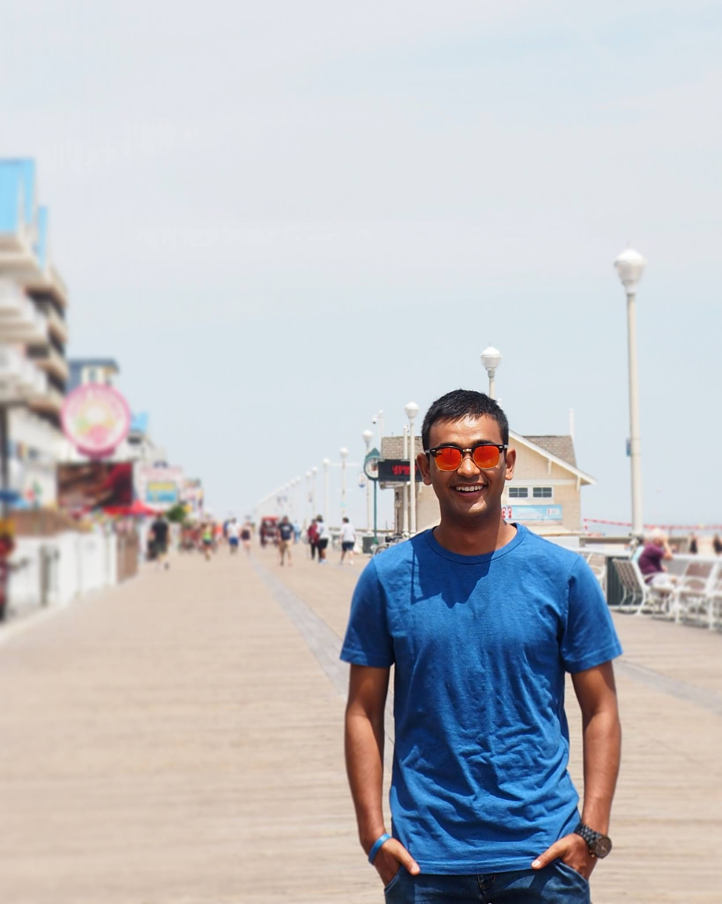

<ion-header>

  <ion-navbar>
    <button ion-button menuToggle>
        <ion-icon name="menu"></ion-icon>
    </button>
    <ion-title text-center>Chat <ion-icon name="chatbubbles"></ion-icon></ion-title>
  </ion-navbar>

</ion-header>

<ion-content padding>

    <ion-list>
      <button ion-item (click)="gotoUserC()">

          <ion-avatar item-start>
            
          </ion-avatar>
          <h2>Cher</h2>
          <p>Ugh. As if.</p>

      </button>
    </ion-list>

</ion-content>
